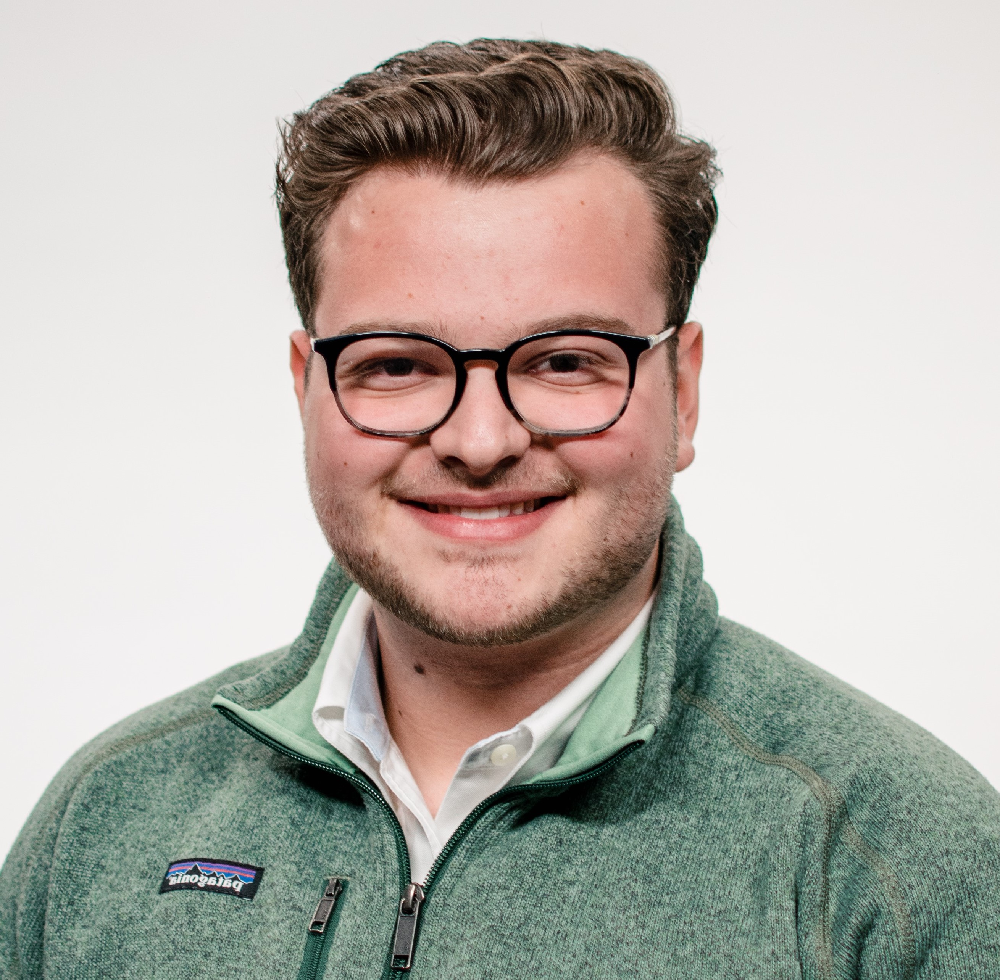

Hi, I'm Josh! Nice to meet you!
Here are some basics about me.
I grew up in Flint, MI where I lived for most of my childhood. When I was 11 or 12, I moved to Clarkston, where I continue to live today. In high school, I was a part of an accelerated math, science, and technology program designed for students who were interested in pursuing careers in engineering. I never wanted to be an engineer, but I wanted to become friends with people who were, because they were definitly the smartest kids in school. I knew from an early age that I wanted to be a businessman. I loved the idea of solving the worlds problems and meeting new people. When I graduated and came to Michigan State, I knew that I wanted to be a part of as many organizations as I could. I joined 3 different clubs and even rushed a fraternity! As I've continued thorugh college, I have narrowed down my interests and pursued organizations that align with that. One thing that I'm most proud of during my time in college was starting my first business. It was a 'cryptocurrency investment fund' that I started with a friend of mine who was a computer science and math major. We invested small amount of money from our friends and family into cryptocurrency. For a while we were doing pretty well, beating the market index by over 20%, but then when the whole cryptocurrency market crashed, our fund experienced major losses as well. I learned a lot from that experience and it only made me want to be an entreprenuer more! I began taking classes outside of my normal business curriculum, things like philosophy, astronomy, and computer science courses to learn more about the world through the lens of business. I discovered early on that I was really interested in technology and pursued a minor in IT. This gave me the opportunity to take classes like this one, where I get to learn about technology and computers.